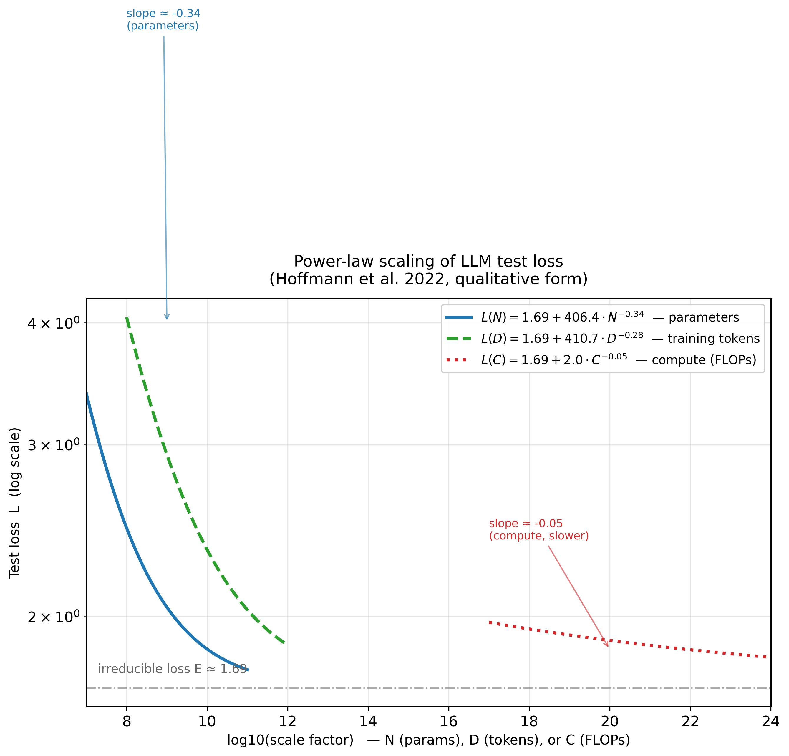
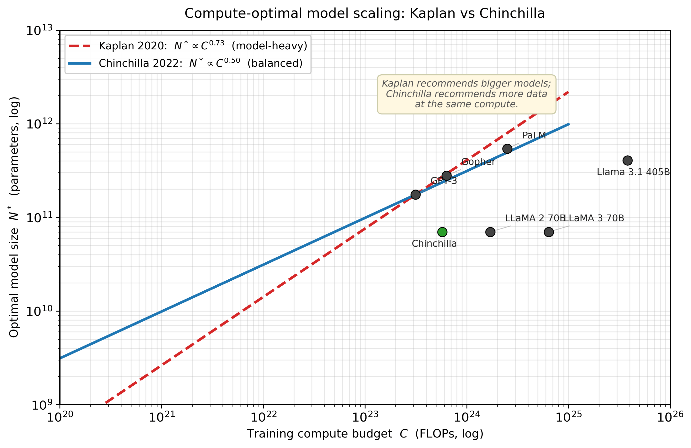
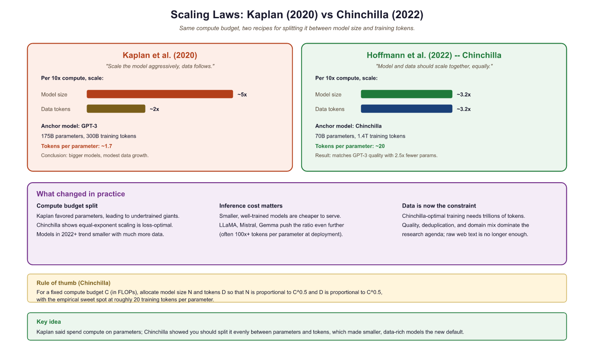
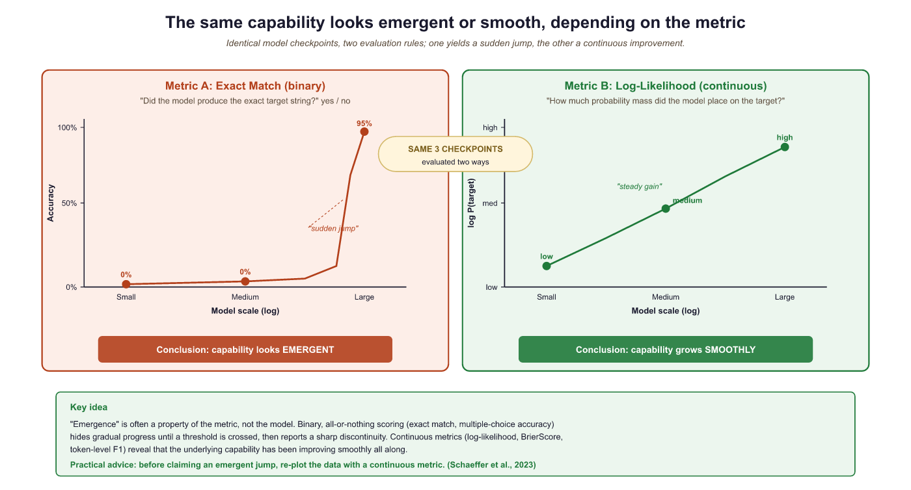

Scaling laws are the rare case where "just make it bigger" turned out to be rigorous science. The math says your model is too small, your data is too little, and your budget is never enough. At least now you can quantify the despair.
Scale, Budget Crushing AI Agent
Why do scaling laws matter? Training a large language model costs millions of dollars. Scaling laws provide a mathematical framework for predicting a model's performance before committing those resources. They answer critical questions: How big should the model be? How much data does it need? What loss can we expect for a given compute budget? The Kaplan and Chinchilla scaling laws have fundamentally reshaped how the industry trains models, and understanding them is essential for anyone working with LLMs at scale. The pre-training objectives from Section 6.2 define the loss function that scaling laws predict.
Prerequisites
This section assumes familiarity with the landmark models from Section 6.1 and pre-training objectives from Section 6.2. Understanding of logarithmic relationships and basic calculus (derivatives for optimization) helps with the mathematical content. The scaling laws discussed here connect forward to inference-time scaling in Section 8.3.
6.3.1 The Power Law Foundation
The narrow range is dictated by a tension visible in the loss landscape, not by trial-and-error. Fedus et al. (2022) measured the gradient norm of the load-balance loss vs the language-modeling loss across training and found the ratios that keep both gradients within an order of magnitude land in 1e-3 to 1e-2. Below 1e-3 the load-balance gradient is dominated by Adam's noise floor and the constraint stops being active. Above 1e-2 the balance loss overwhelms the LM signal and experts are forced into uniform routing, collapsing specialization. This is the same dynamic-range argument that governs auxiliary losses across the field: aux-loss coefficients are bounded above by the dominant gradient and below by the optimizer's noise floor.
The 20:1 ratio is not a universal constant; it falls out of the specific exponents Hoffmann et al. fit (α ≈ 0.34, β ≈ 0.28). Setting ∂L/∂N = ∂L/∂D under the compute constraint C = 6ND gives the optimal ratio D*/N* = (αA / βB)^(1/(α+β)). With Hoffmann's constants this evaluates near 20. The point worth stating: if the data exponent β rises (better data), the ratio rises too, which is exactly why Llama 3 at ratio 1875 is not a contradiction but the correct response to improved data quality. The 20 is a snapshot, not a law of nature.
Mixture-of-Experts models train an internal router that sends each token to a small subset of experts. The router is learned end-to-end, so the question of what feature space the router uses to discriminate is empirical. Early speculation (per-domain experts, per-language experts) is mostly wrong. The 2024-25 mechanistic-interpretability work on Mixtral and DeepSeek-V3 shows routers cluster tokens by syntactic role, by next-token-type prediction, and by discourse position rather than by topic. Open question: is this an artifact of web-scale training distribution, or does it reflect a fundamental locality structure of language? Replication on small from-scratch MoE models would help disentangle this.
The irreducible loss L∞ conflates three distinct sources of unpredictability. First, semantic ambiguity: "The doctor told the nurse she should..." has multiple valid completions. Second, stylistic variation: identical semantic intent, different word choices, and the model cannot predict which an author will make. Third, data noise: OCR errors, encoding artifacts, duplicate documents with inconsistent content. Only the third is reducible through data curation. A cleaner corpus genuinely lowers effective L∞, which is why the Llama 3 data team's 90% filtering rate produced measurably better models than raw Common Crawl at the same token count. When your model's loss plateaus, ask: am I hitting the linguistic floor, or the data-quality floor?
This section is the canonical statement of the train-time compute axis. The functional form of scaling laws (loss as a power law in compute, parameters, and data) is what turns "more compute" from a vague intuition into a budgeting equation. Section 9.1 develops the orthogonal test-time axis (extended reasoning, best-of-N, search). Together they define the 2-D space of "compute strategies" that every production system has to navigate. The accompanying knowledge axis (parametric here, non-parametric in Chapter 23 on RAG) gives you the full 4-D decision space introduced in the Conceptual Map.
The remarkable empirical discovery underlying all scaling laws is that language model loss follows a power law relationship with respect to model size, dataset size, and compute. This means that as you increase any of these quantities, loss decreases predictably as a straight line on a log-log plot. Formally, the relationship takes the form:
Here, $x$ is the quantity being scaled (parameters, tokens, or FLOPs), $a$ is a constant, $\alpha$ is the scaling exponent (typically between 0.05 and 0.10), and $L_{ \infty }$ is the irreducible loss (the entropy of natural language itself). The irreducible loss represents the theoretical limit: no model, regardless of size, can predict language perfectly because language is inherently stochastic.
This relationship holds across many orders of magnitude, which is what makes it practically useful. You can train a series of small models, fit a power law curve, and then extrapolate to predict the loss of a much larger model.
Power laws in neural scaling are not unique to language models; they are a signature of systems governed by scale-free dynamics, a phenomenon studied extensively in statistical physics, economics, and complex systems theory. Zipf's law (word frequency follows a power law), Pareto's principle (wealth distribution follows a power law), and the Gutenberg-Richter law (earthquake magnitudes follow a power law) all exhibit the same mathematical form. Physicist Per Bak's theory of "self-organized criticality" (1987) suggests that power laws emerge in systems that naturally evolve toward a critical state where structure exists at all scales. The deep question is why neural network loss should follow this pattern at all. One hypothesis, advanced by Henighan et al. (2020), is that natural language itself has a hierarchical, multiscale structure (characters, morphemes, words, phrases, sentences, paragraphs, documents), and each additional order of magnitude in compute allows the model to capture the next level of this hierarchy. The irreducible loss $L_\infty$ then represents the fundamental entropy of language: the unpredictability that persists even for a hypothetical perfect model, because human language production is itself stochastic.
6.3.2 Kaplan Scaling Laws (2020)

The foundational work by Kaplan et al. at OpenAI established three key relationships. First, loss scales as a power law with model parameters $N$ (number of non-embedding parameters):
Second, loss scales as a power law with dataset size $D$ (number of tokens):
Third, loss scales as a power law with compute budget $C$ (in FLOPs (floating-point operations, a count; not to be confused with FLOPS, which measures operations per second)):
Who: A research team at a pharmaceutical company planning to pre-train a language model specialized in biomedical literature.
Situation: The team had a fixed compute budget equivalent to 1,000 A100 GPU-hours and access to 50B tokens of biomedical text. They needed to decide on model size.
Problem: Without scaling law guidance, the team initially planned to train a 13B parameter model (following the "bigger is better" intuition), but their data budget would only allow 4 epochs over the corpus, far below what Chinchilla scaling recommends.
Dilemma: A 13B model undertrained on limited data versus a smaller model trained to compute-optimality. The team worried that a smaller model would lack capacity for complex biomedical reasoning.
Decision: They applied Chinchilla scaling laws, which indicated their compute budget was optimal for a 2.7B model trained on approximately 54B tokens (slightly over one epoch with augmentation).
How: They trained three pilot models (400M, 1B, 2.7B) on 10% of the compute budget, fit power law curves to the validation losses, and extrapolated to confirm the 2.7B target.
Result: The 2.7B compute-optimal model achieved 8% lower perplexity than the 13B undertrained model on biomedical benchmarks, while using the same total compute. It also outperformed a general-purpose 7B model on domain-specific tasks.
Lesson: Scaling laws are not just theoretical; running small pilot experiments and fitting power law curves can save millions in wasted compute by identifying the optimal model size before committing your full budget.
The Kaplan Compute-Optimal Recipe
A critical conclusion from the Kaplan analysis was that, given a fixed compute budget, you should prioritize increasing model size over increasing the number of training tokens. Specifically, Kaplan found that as compute increases by 10x, you should scale model size by roughly 5x but only increase data by about 2x. This led to a generation of very large models trained on relatively modest amounts of data, exemplified by GPT-3 (175B parameters trained on 300B tokens).
Kaplan's experiments did not train models to convergence. The largest models were stopped early, which biased the results toward favoring larger models. The Chinchilla work later corrected this methodological issue.
The Kaplan recipe dominated thinking at major labs for two years. Then a team at DeepMind asked a simple question: what happens if we actually train models to convergence before drawing conclusions? The answer upended the entire field's approach to compute allocation.
6.3.3 Chinchilla Scaling Laws (2022)

The Chinchilla paper essentially told the entire industry: "You have been training your models wrong." It showed that most large models were massively over-parameterized for the amount of data they saw, which is the AI equivalent of buying a Formula 1 car and only ever driving it in a parking lot.
Hoffmann et al. at DeepMind revisited scaling with more careful experimental design, training over 400 models ranging from 70M to 16B parameters. Their key methodological improvement was training each model to near-convergence on its dataset, eliminating the early-stopping bias in the Kaplan analysis.
The Chinchilla result was striking: for a compute-optimal training run, the number of parameters and the number of training tokens should scale equally. The combined loss is modeled as:
where $\alpha \approx 0.34$, $\beta \approx 0.28$, $E \approx 1.69$ (the irreducible entropy), and $A$, $B$ are constants. Minimizing this loss subject to a compute constraint $C \approx 6ND$ yields the compute-optimal allocation:
This means parameters and tokens should be scaled at roughly the same rate. The practical implication is that a 70B model should be trained on approximately 1.4 trillion tokens (a ratio of about 20 tokens per parameter).
Algorithm: Compute-optimal (N*, D*) for fixed FLOPs budget C
Input: total FLOPs budget C, fitted constants
E = 1.69, A = 406.4, B = 410.7, alpha = 0.34, beta = 0.28
FLOPs-per-token approximation: 6 N D = C
Output: optimal parameter count N*, optimal token count D*
// 1. Parametric loss surface (Hoffmann et al., 2022)
L(N, D) := E + A / N^alpha + B / D^beta
// 2. Substitute the budget constraint D = C / (6 N), then minimize over N
L(N) := E + A / N^alpha + B * (6 N / C)^beta
// 3. Set dL/dN = 0
d/dN [ A / N^alpha + B * (6 N / C)^beta ] = 0
-alpha A / N^{alpha + 1} + beta B (6/C)^beta N^{beta - 1} = 0
=> N^{alpha + beta} = (alpha A) / (beta B (6/C)^beta)
=> N* = G * C^a with a = beta / (alpha + beta)
D* = (C / 6) / N* = G' * C^b with b = alpha / (alpha + beta)
// 4. Numerically: a ~= 0.50, b ~= 0.50 (parameters and tokens scale jointly)
Return N*, D*
Practical rule of thumb (Hoffmann et al., 2022):
D* / N* ~= 20 (i.e., "20 training tokens per parameter")Source: Hoffmann et al., "Training Compute-Optimal Large Language Models" (Chinchilla), NeurIPS 2022 (arXiv:2203.15556). The key methodological correction over Kaplan et al. (2020) was training every pilot model to convergence; Kaplan's early-stopped runs had biased the exponent estimate to favor parameters over data.

Why Chinchilla Changed Everything
The Chinchilla result implied that many existing models were significantly undertrained. Gopher (280B parameters trained on 300B tokens) was revealed to be suboptimal: a 70B model trained on 1.4T tokens (Chinchilla) matched or exceeded Gopher on nearly every benchmark, while being 4x smaller and therefore 4x cheaper to serve at inference time (for the techniques that make smaller models fast to serve, see Chapter 9). This triggered a major shift in the industry. Post-Chinchilla models like Llama were designed with much larger data-to-parameter ratios.
6.3.4 Beyond Chinchilla: Over-Training for Inference
While Chinchilla defines the compute-optimal point for a single training run, real-world deployments face a different optimization problem. A model is trained once but serves millions of inference requests. From this total cost perspective, it can be economical to train a smaller model on far more data than is compute-optimal, paying more in training compute to reduce inference cost per query.
The Llama family exemplifies this strategy. Llama-1 7B was trained on 1 trillion tokens, giving a ratio of approximately 143 tokens per parameter, roughly 7x beyond the Chinchilla-optimal ratio. Llama-2 was trained on 2 trillion tokens. The rationale: the additional training cost is paid once, but the smaller model saves compute on every single inference call. An alternative to over-training is knowledge distillation, which transfers capabilities from a large teacher model into a smaller student.
Chinchilla-optimal is not deployment-optimal. If you plan to serve a model to millions of users, you should train a smaller model for longer. The key metric shifts from "minimize training FLOPs for a given loss" to "minimize total cost of ownership (training + inference) for a given loss."
FLOPs (floating-point operations, lowercase 's') counts the total number of arithmetic operations performed. FLOPS (floating-point operations per second, uppercase 'S') measures throughput. When we say "a training run used 1024 FLOPs," we mean total operations. When we say "an H100 delivers 989 TFLOPS," we mean operations per second. Confusing the two is a common source of errors in compute budget calculations.
The scaling laws discussed so far govern train-time compute: investing more resources during training to improve the model. A complementary paradigm, inference-time scaling, invests additional compute during each inference request to improve output quality. Rather than building a larger model, you let the same model "think longer." This approach, embodied by OpenAI's o1/o3 and DeepSeek-R1, creates an entirely new scaling law. See Section 8.3 for the full treatment.
Post-Chinchilla Scaling: Inference-Optimal Training in Practice
The post-Chinchilla era (2023 to 2025) has produced a rich empirical record of how leading labs actually allocate training budgets. The trend is clear: every major open-weight model released since 2023 has been trained on far more tokens than Chinchilla would prescribe, and the degree of over-training has increased with each generation.
Llama 3 (Meta, 2024) represents the most dramatic departure from Chinchilla ratios. The Llama 3 8B model was trained on approximately 15 trillion tokens, giving a tokens-per-parameter ratio of roughly 1,875, nearly 100x the Chinchilla-optimal ratio of approximately 20. Even the Llama 3 70B model used 15T tokens, yielding a ratio of about 214 tokens per parameter. Meta's technical report explicitly frames this as an inference-cost optimization: by investing more in training, the resulting models deliver stronger per-query performance at their given parameter count, amortizing the training cost over billions of inference calls. The Llama 3 training consumed roughly 30 million GPU-hours on H100 hardware, a cost that Meta estimated would be recovered within months of deployment given inference volume.
Inference-optimal scaling laws. Sardana and Frankle (2024) formalized this intuition into quantitative "inference-aware" scaling laws that incorporate both training cost and expected inference volume into the optimization objective. Their key finding: when the total inference compute is expected to exceed training compute by 10x or more (which is typical for any model serving thousands of users), the optimal strategy is to train a model that is 2 to 4x smaller than Chinchilla-optimal but on 5 to 20x more data. The exact ratio depends on the inference hardware and deployment pattern. For batch inference workloads (where throughput matters more than latency), the optimal model is larger; for real-time serving (where latency constraints dominate), smaller models trained on more data deliver better cost efficiency.
Algorithm: Total-cost-optimal (N*, D*) accounting for inference
Input: expected lifetime inference tokens T_inf
Chinchilla parameters (E, A, B, alpha, beta) from Algorithm 6.3.1
FLOPs constants: train = 6 N D, inference = 2 N per generated token
Output: (N*, D*) minimizing total FLOPs cost for target loss L_target
// 1. Total compute = training + inference
C_total(N, D) := 6 N D + 2 N T_inf
// 2. Substitute D from the loss constraint L(N, D) = L_target
// using L(N, D) = E + A / N^alpha + B / D^beta
D(N) := ( B / (L_target - E - A / N^alpha) )^{1 / beta}
// 3. Minimize C_total(N, D(N)) over N
Solve dC_total / dN = 0 numerically (one-dimensional convex problem)
// 4. Interpretation: the optimum trades 6 D training FLOPs against 2 T_inf
// inference FLOPs per parameter. As T_inf grows, the optimum N* shrinks
// (smaller model) and D* grows (more training tokens per parameter).
Return (N*, D*)
Practical regime (T_inf >> training tokens):
N* ~= 0.3 to 0.5 * N*_Chinchilla (smaller model)
D* ~= 5 to 20 * D*_Chinchilla (over-train on more data)
matches Llama-3 8B (15T tokens, ~1875 tokens/param, ~94x Chinchilla)Source: Sardana et al., "Beyond Chinchilla-Optimal: Accounting for Inference in Language Model Scaling Laws," ICML 2024 (arXiv:2401.00448). The asymmetry in FLOPs constants (6 N per training token vs 2 N per inference token) reflects the standard forward + backward + activation gradient cost ratio for training; doubling T_inf doubles the inference-side gradient on N but leaves the training side unchanged, which is exactly why over-training pays off as deployment scale grows.
Diminishing returns and the data quality frontier. Over-training does not scale indefinitely. Empirical evidence from Llama 3 shows that loss continues to decrease as more tokens are processed, but the rate of improvement diminishes. Between 5T and 10T tokens, loss improves more slowly than between 1T and 5T tokens, and the gains from 10T to 15T tokens are smaller still. Critically, these diminishing returns depend on data quality. Training on 15T tokens of high-quality, deduplicated data produces substantially better models than 15T tokens of raw web crawl. Meta's data curation pipeline for Llama 3 was reported to filter out over 90% of raw web data, and they used classifier-based quality filtering trained on human preferences. This has shifted the competitive frontier from "who can get the most data" to "who can build the best data curation pipeline," a theme explored further in Section 15.1.
6.3.5 Data-Constrained Scaling
A growing concern in the LLM community is the potential exhaustion of high-quality training data. Muennighoff et al. (2023) studied what happens when the Chinchilla-optimal token count exceeds available data. Their findings suggest that repeating data up to 4 epochs causes minimal degradation in performance, but beyond that, the value of additional repetitions diminishes rapidly. For a given compute budget $C$ with a data budget $D_{\max}$, the effective token count follows:
where $R = D_{total}/D_{\max}$ is the number of epochs. This diminishing-returns formula implies that once you have exhausted your data budget, the marginal benefit of additional epochs is exponentially decaying.
Scaling laws tell us how loss decreases smoothly with more compute and data. But something unexpected happens as models grow: certain capabilities appear to materialize abruptly rather than gradually. This phenomenon has sparked one of the most active debates in the field.
6.3.6 Emergent Capabilities and Phase Transitions
One of the most debated phenomena in LLM scaling is emergence: the apparent sudden appearance of new capabilities at certain model sizes. Tasks like arithmetic, chain-of-thought reasoning, and multi-step logic appear to be absent in small models and then abruptly appear in larger ones. Chapter 42 covers the evaluation frameworks used to measure these capabilities systematically. Wei et al. (2022) catalogued over 100 such emergent tasks across the BIG-Bench benchmark suite.
The Metric Mirage Hypothesis
Schaeffer et al. (2023) challenged the notion of sharp emergence. Their key argument: whether a capability appears "emergent" depends heavily on the choice of evaluation metric. With discrete metrics like exact-match accuracy, performance looks flat at zero until a threshold is crossed, creating the illusion of a sudden phase transition. When the same tasks are measured with continuous metrics (like token-level log-likelihood), performance improves smoothly and predictably. The capability was always improving; the metric just could not detect the gradual progress.

The debate over emergence in LLMs echoes a central question in statistical physics: are phase transitions real discontinuities or artifacts of measurement? In physics, water does not "suddenly" become ice; at the molecular level, crystallization progresses continuously, but macroscopic properties like viscosity and density appear to change discontinuously at 0 degrees Celsius. The metric mirage hypothesis proposes the same explanation for LLM emergence: capabilities develop gradually, but discrete evaluation metrics create the illusion of a sudden jump. Whether or not sharp emergence is real, the power-law scaling of loss with compute is itself remarkable. Power laws in physics typically signal scale invariance and universality, arising when a system's behavior is governed by the same principles regardless of scale. The fact that neural scaling laws hold across architectures, datasets, and modalities suggests that something fundamental about learning from data obeys a universal scaling principle, a principle we do not yet fully understand.
6.3.7 Mixture-of-Experts Architecture
A mixture-of-experts layer is a learned mixture model: the router outputs mixing weights; each expert is a conditional distribution. Training follows a hard-EM pattern: assign tokens to experts, update expert weights, repeat. This predicts expert collapse precisely: in EM, any component with a higher initial likelihood attracts more data and starves others. The standard fix in classical mixture modeling is adding a Dirichlet prior on mixing weights toward uniformity, which is exactly what the load-balancing auxiliary loss does. Tuning that loss coefficient is equivalent to tuning prior strength in a Bayesian mixture model.
The scaling laws we have studied so far assume a dense model: one where every parameter participates in every forward pass. But what if you could double the number of parameters without doubling the compute cost per token? That is the core idea behind Mixture-of-Experts (MoE), a sparse architecture that is reshaping how frontier models are built.
An MoE layer replaces the single feed-forward network (FFN) sublayer in a transformer block with N expert FFN layers, but activates only K of them for any given token (where K is much smaller than N, typically K=2 or K=8 out of 64 or 256 experts). The parameter count grows with N, but the FLOPs per token grow only with K. The original idea was introduced by Shazeer et al. (2017), later scaled dramatically by Fedus et al. (2022) with Switch Transformers, and has since become a standard architectural choice at frontier scale.
Router and Gating Mechanism
The routing decision is made by a small learned gating network: a linear projection from the token's hidden state into N scores, one per expert. A softmax normalizes these scores into routing probabilities. For top-K routing (hard routing), only the K experts with the highest probabilities receive the token; the others are skipped entirely. The output of the MoE layer is a weighted combination of the K activated experts' outputs, weighted by their normalized routing probabilities.
Formally, given token representation $\mathbf{x}$, the router computes:
The top-K selection produces a sparse gate vector $\tilde{g}$ with only K non-zero entries, and the layer output is:
The distinction between hard routing (top-K with exactly K winners) and soft routing (a weighted mixture of all experts with learned soft gates) has practical consequences. Hard routing is more compute-efficient because non-selected experts do not run at all, making the FLOPs savings concrete. Soft routing can be more stable during training but requires running all experts, negating the sparsity benefit during training itself.
Load Balancing: Preventing Expert Collapse
Without any constraint, routing networks collapse: the gating network discovers a few "popular" experts early in training and routes most tokens to them, while the remaining experts receive almost no gradient signal and never develop useful specializations. This is called expert collapse.
The standard fix is an auxiliary load-balancing loss added to the training objective. Define the fraction of tokens routed to expert i as $f_i$ and the average routing probability assigned to expert i as $p_i$. The auxiliary loss penalizes uneven routing:
Here $\alpha$ is a small coefficient (typically 0.01 to 0.001) and the factor $N$ normalizes by the number of experts. This auxiliary loss is differentiable with respect to $p_i$ (the soft routing probabilities), even though the hard selection of top-K experts is not itself differentiable. The practical tuning of $\alpha$ is delicate: too high and the model sacrifices quality for perfect load balance; too low and collapse re-emerges.
The load-balancing loss creates a fundamental tension. Ideally, different experts would specialize in different domains (syntax, facts, code, math), and routing would send each token to its "best" experts. But forced load balancing means every expert must handle roughly equal traffic, limiting how specialized they can become. Research by Fedus et al. (2022) found that some specialization does emerge despite load balancing: experts tend to cluster by token type (punctuation, verbs, domain-specific terms) even under uniform routing pressure. DeepSeek-V3's technical report notes that their 256 experts developed measurably distinct specializations across domains, measurable by the input-distribution shift between expert inputs.
MoE Layer Diagram

Landmark MoE Models: Mixtral and DeepSeek-V3
Mixtral 8x7B (Mistral AI, 2024) was the model that brought MoE into widespread practical use. The architecture uses 8 expert FFN layers per transformer block with top-2 routing. Despite having 47 billion total parameters (8 experts times the FFN size), only about 13 billion parameters are active for any given token, making inference cost comparable to a 13B dense model while achieving quality closer to a 70B dense model on most benchmarks. The reduction in active parameters directly translates to faster generation and lower memory bandwidth requirements at inference time.
DeepSeek-V3 (DeepSeek AI, 2024) pushed MoE to a new scale. With 671 billion total parameters across 256 experts per layer and top-8 routing, only about 37 billion parameters are active per token. The architecture also incorporates auxiliary-loss-free load balancing, a refinement over the standard auxiliary loss approach: rather than penalizing imbalance during training, the router's bias terms are adjusted dynamically based on observed load, decoupling load balancing from the loss objective and allowing the router to specialize more aggressively. DeepSeek-V3 was trained on 14.8 trillion tokens, and its technical report claims the full training run cost approximately 2.8 million H800 GPU hours, a fraction of what comparable dense models cost. The key efficiency gain comes from the MoE architecture: the 671B total parameters provide the knowledge capacity of a very large model, but the 37B active parameters mean the FLOPs budget per training step is far below what a 671B dense model would require.
# Load Mixtral 8x7B with 4-bit quantization (~25 GB vs ~94 GB at FP16).
# device_map="auto" distributes layers across all available GPUs / RAM.
# Requires: pip install transformers accelerate bitsandbytes
from transformers import AutoModelForCausalLM, AutoTokenizer, BitsAndBytesConfig
import torch
bnb_config = BitsAndBytesConfig(
load_in_4bit=True,
bnb_4bit_quant_type="nf4", # NormalFloat4 (best for LLM weights)
bnb_4bit_compute_dtype=torch.bfloat16,
bnb_4bit_use_double_quant=True, # second-level quant on the constants
)
model_id = "mistralai/Mixtral-8x7B-Instruct-v0.1"
tok = AutoTokenizer.from_pretrained(model_id)
model = AutoModelForCausalLM.from_pretrained(
model_id,
quantization_config=bnb_config,
device_map="auto",
)
prompt = "Explain mixture-of-experts in two sentences."
inputs = tok(prompt, return_tensors="pt").to(model.device)
output = model.generate(**inputs, max_new_tokens=200, temperature=0.7, do_sample=True)
print(tok.decode(output[0], skip_special_tokens=True))device_map="auto" argument distributes the 8 experts per layer across available GPUs automatically.Because only 13B parameters are active per token, Mixtral 8x7B fits on two consumer GPUs (2x RTX 3090 or 2x 4090, 24GB each) when quantized to 4-bit precision. A 70B dense model with equivalent quality would require 4 to 8 A100s. This is the MoE efficiency dividend in practice.
Using the transformers library, loading Mixtral is identical to loading any other model:
from transformers import AutoModelForCausalLM, AutoTokenizer
import torch
model = AutoModelForCausalLM.from_pretrained(
"mistralai/Mixtral-8x7B-v0.1",
device_map="auto", # spreads across available GPUs
torch_dtype=torch.bfloat16,
load_in_4bit=True, # BitsAndBytes 4-bit quantization
)
tokenizer = AutoTokenizer.from_pretrained("mistralai/Mixtral-8x7B-v0.1")
# Check how many parameters are loaded vs. total
total_params = sum(p.numel() for p in model.parameters())
print(f"Total parameters loaded: {total_params / 1e9:.1f}B")
# Active per forward pass: ~13B out of 47B totalExpert Parallelism: Distributing MoE Across GPUs
MoE introduces a new parallelism strategy called expert parallelism. In a dense model, tensor parallelism splits each matrix across GPUs. In an MoE model, different GPUs can hold different subsets of the expert pool. Because a given token only activates K of the N experts, and those experts may reside on different GPUs, expert parallelism requires an all-to-all communication pattern: after the router decides which experts each token goes to, the tokens must be dispatched to the GPUs holding those experts, processed, and then gathered back. This all-to-all communication is a significant engineering challenge at large scale. With 256 experts across dozens of GPUs, the communication volume can become a bottleneck, particularly when routing is uneven and some GPUs receive more tokens than others in a given batch. This is a second reason load balancing matters so much in practice: not just for gradient signal, but for communication efficiency.
6.3.8 Scaling Laws for Sparse Models
Sparse MoE models do not follow the same Chinchilla-optimal ratios as dense models. Clark et al. (2022) derived scaling laws specifically for routed models, finding that MoE introduces an additional scaling axis: the number of experts E. The effective parameter count for loss prediction is not the total parameter count N but something closer to the active parameter count multiplied by a factor that grows with E. Informally, experts add capacity at a discount: doubling experts improves loss, but by less than doubling the total parameter count of a dense model.
The Effective Parameter Concept
A useful practical heuristic for MoE models is the concept of effective parameters. An MoE model with N total parameters and K/E active fraction behaves somewhere between a dense model of size K*N/E (active parameters only) and a full dense model of size N, depending on the degree of expert specialization and the number of training tokens. For training compute budgeting, the relevant quantity is the FLOPs cost, which scales with active parameters, not total parameters. For inference quality, the relevant quantity is closer to total parameters, because different tokens see different experts and the model's "effective knowledge" is spread across the full expert pool.
Concretely: DeepSeek-V3 with 671B total parameters and 37B active behaves at inference quality roughly like a 70-100B dense model on most tasks, but its training FLOPs per token are set by the 37B active parameters. This means DeepSeek-V3 was trained at roughly the compute cost of a 37B dense model while achieving the quality of a much larger one. This breaks the implicit Chinchilla assumption that quality scales with the parameters receiving gradient signal: in MoE, parameters that are not selected for a given token are still updated indirectly through the load-balancing loss and through tokens that do route to them, but they receive less gradient signal per training step.
Training Compute vs. Inference Compute
MoE delivers efficiency advantages on both fronts. Training a 671B MoE model at 37B active parameters per token costs roughly the same per-step FLOPs as training a 37B dense model. At inference time, serving the model costs roughly as much memory bandwidth as serving a 37B dense model (plus the overhead of routing and all-to-all communication), while delivering quality closer to a 70-100B dense model. The cost tradeoffs differ between deployment contexts:
- High-throughput batch inference: MoE models can be very efficient because all-to-all communication overhead is amortized over large batches, and the active-parameter FLOPs advantage is maximized.
- Low-latency single-token serving: The all-to-all communication adds latency overhead, and the full expert pool must reside in GPU memory (or be swapped, which is slow). Dense models with smaller active parameter counts may be preferable for strict latency requirements.
- Edge and on-device inference: MoE models are generally a poor fit because the full model must be loaded even though only a fraction executes per token. The memory constraint matters more than the compute constraint in this regime.
Dense vs. MoE Comparison
| Model | Architecture | Total Params | Active Params/Token | Training Tokens | Approx. Training FLOPs |
|---|---|---|---|---|---|
| LLaMA 3 70B | Dense | 70B | 70B (all) | 15T | ~6.3 × 1024 |
| Mixtral 8x7B | MoE (8 exp, top-2) | 47B | ~13B | ~1T | ~3.0 × 1023 |
| DeepSeek-V3 | MoE (256 exp, top-8) | 671B | ~37B | 14.8T | ~3.3 × 1024 |
Training FLOPs estimated using the 6ND approximation applied to active parameters. DeepSeek-V3's training cost is comparable to LLaMA 3 70B despite 10x more total parameters, illustrating the MoE efficiency dividend.
Exercises
The Chinchilla rule of thumb says optimal training uses roughly 20 tokens per parameter. (a) For a 70B-parameter model, what is the compute-optimal token count? (b) For a 7B model? (c) If you instead train the 7B on 15T tokens (Llama-3 style, far past Chinchilla optimal), what is the practical motivation for "over-training" relative to the optimal point?
Answer Sketch
(a) 70B x 20 = 1.4T tokens. (b) 7B x 20 = 140B tokens. (c) Chinchilla optimizes pretraining loss per FLOP, treating training compute as the only cost. In production, inference cost dominates over the lifetime of a deployed model. Over-training a smaller model gives you a permanently cheaper-to-serve checkpoint that beats a Chinchilla-optimal larger model on per-query cost, even though it cost more compute upfront. Llama-3-8B at 15T tokens is roughly 90x past Chinchilla optimal because Meta amortized that cost over billions of inference calls.
You have a 1B model that achieves loss 2.5 nats with 100 PFLOP-days of compute. Using the Chinchilla scaling law approximation that loss scales as $L(C) = L_\infty + (C_0/C)^\alpha$ with $\alpha \approx 0.34$, predict: (a) the loss after 10x more compute (1000 PFLOP-days); (b) the loss after 100x more compute; (c) at what point does it stop being worth doubling compute under a fixed budget?
Answer Sketch
(a) Each 10x of compute reduces the (compute-dependent) part of the loss by roughly $10^{0.34} \approx 2.2$x. If we approximate $L_\infty \approx 1.7$, the gap (2.5 - 1.7 = 0.8) shrinks to about 0.36, giving loss ~2.06. (b) After 100x: gap shrinks by another 2.2x to ~0.16, loss ~1.86. (c) Doubling cost gives diminishing relative loss reductions; in production you stop when the marginal evaluation gain (downstream benchmark deltas) no longer justifies the compute, which empirically tends to be 2-5x past Chinchilla optimum for static benchmarks but much further for inference-amortized deployments.
You want to estimate scaling-law coefficients for your custom architecture. Sketch the experimental design: how many model sizes, how many compute budgets per size, and what you fit. List the minimum 6 (model_size, tokens_seen, final_loss) tuples you would collect, then describe the curve fit you would run on those tuples.
Answer Sketch
Use 3 model sizes (e.g., 50M, 200M, 800M) and 2-3 compute budgets per size, giving 6-9 runs total. Each run records the final validation loss after a fixed number of tokens. Fit the joint Chinchilla form $L(N, D) = E + A/N^\alpha + B/D^\beta$ by minimizing Huber loss on the log of the residuals (least squares is unstable here). For each compute budget $C = 6ND$, the optimal allocation is then $N \propto C^{a}, D \propto C^{b}$ with exponents that come from the fit. Even 6 runs typically give the right rough exponents to within 0.05; more runs let you cross-validate the form itself.
Scaling laws predict loss, not capability. Give three concrete examples where a scaling-law extrapolation would have led you to a wrong product decision. For each, name the missing factor that the loss curve does not capture.
Answer Sketch
(1) Emergent capabilities: GSM8K accuracy is near zero up to ~7B parameters then jumps; the loss curve was smooth, but the downstream metric had a phase transition, so you might have killed the project at 1B. (2) Inference cost: a 70B model at Chinchilla optimum has lower loss than a 7B over-trained model, but per-query latency and dollar cost may be 10x worse, killing the unit economics. (3) Alignment quality: scaling law loss says nothing about helpfulness or safety; raw GPT-3-175B was largely unusable as a product, while a tiny instruction-tuned model was useful. The general lesson: pretraining loss is a necessary but very lossy proxy for product value.
6.3.9 Multi-Token Prediction and Scaling
Standard language model training predicts one token at a time: given the context, predict the next token. Multi-token prediction (MTP) changes this by adding additional prediction heads to the model, each trained to predict a token further in the future. Gloeckle et al. (Meta, 2024) showed that this architectural change improves both sample efficiency and downstream performance, with the gains scaling favorably with model size.
Architecture: Multiple Prediction Heads
The standard MTP implementation adds d additional small transformer layers, each producing a prediction of the token d steps ahead. The architecture during training looks like:
- The main model body processes the sequence and produces hidden states.
- Head 0 (the standard next-token head) predicts token t+1.
- Head 1 (additional head) predicts token t+2, using the hidden state from head 0 concatenated with the embedding of the true token t+1.
- Head 2 predicts token t+3, using head 1's hidden state concatenated with the embedding of the true token t+2.
- And so on for the remaining d-2 future heads.
Each future head contributes its own cross-entropy loss term to the total training objective, with a weighting coefficient (typically 0.1 to 0.3 per future head) to avoid dominating the main next-token signal. During inference, only head 0 is used for standard auto-regressive generation; the future heads are discarded.
Why MTP Improves Sample Efficiency
The intuition is that predicting multiple future tokens provides richer gradient signal per forward pass. A single forward pass over a sequence of length L with d future prediction heads produces d times as many loss terms as standard training. Put differently, the model receives signal about global structure (several tokens ahead) in addition to local next-token prediction. This is especially valuable for tasks requiring planning: code generation, structured text, and mathematical reasoning, where the correct next token depends on knowing what the overall structure should be several steps later.
From a scaling law perspective, MTP effectively shifts the loss curve downward without changing the scaling exponent. A model trained with MTP achieves the same validation loss as a standard model trained on more data. Gloeckle et al. (2024) report that the gains from MTP are more pronounced at larger model scales: for models below 1B parameters, MTP shows modest improvements, but for models at 7B and above, MTP consistently delivers meaningful gains in coding and reasoning benchmarks at the same training compute budget.
Connection to Speculative Decoding
MTP creates an interesting synergy with speculative decoding, covered in Section 10.3. In speculative decoding, a small "draft" model generates several tokens quickly, and the larger target model verifies them in parallel. If the model was trained with MTP, the future prediction heads can serve as the draft model directly, allowing the same model to speculate on its own output. This is called self-speculative decoding. The draft and target are the same weights; the future heads propose tokens that the main model verifies. DeepSeek-V3 reports using MTP-based self-speculation to improve throughput at inference time, getting meaningful speedups without a separate small draft model.
MTP training costs roughly 5-10% more compute per step (for the additional prediction heads) but yields models that are measurably better at a given compute budget and also faster to serve via self-speculative decoding. This makes it a strong candidate for inclusion in any new pretraining run, at the cost of slightly more engineering complexity in the training loop. The practical recipe: train with 2 to 4 future prediction heads, use the main head for standard inference, and optionally enable the future heads for self-speculative decoding at serving time.
Now that we have covered the theory behind scaling laws and their practical implications, let us get hands-on. The following lab walks you through fitting your own scaling law curves to empirical data and using them to predict performance at larger scales.
6.3.10 Practical Lab: Fitting Scaling Law Curves
The following code demonstrates how to fit a scaling law from empirical training runs and extrapolate predictions for larger models.
# Fit a power-law scaling curve L(N) = a * N^b + c to empirical loss
# data from small training runs, then extrapolate to larger model sizes.
import numpy as np
from scipy.optimize import curve_fit
import matplotlib.pyplot as plt
# Empirical data: (parameters, final_loss) from small training runs
params = np.array([1e6, 5e6, 2e7, 5e7, 1e8, 5e8])
losses = np.array([4.20, 3.75, 3.35, 3.15, 2.98, 2.70])
# Power law model: L(N) = a * N^(-alpha) + L_inf
def scaling_law(N, a, alpha, L_inf):
return a * N ** (-alpha) + L_inf
# Fit the curve
popt, pcov = curve_fit(
scaling_law, params, losses,
p0=[100, 0.07, 1.5], # initial guesses
bounds=([0, 0, 0], [1e6, 1.0, 5.0])
)
a_fit, alpha_fit, L_inf_fit = popt
print(f"Fitted: a={a_fit:.2f}, alpha={alpha_fit:.4f}, L_inf={L_inf_fit:.3f}")
# Predict loss for larger model sizes
target_sizes = [1e9, 7e9, 70e9]
for size in target_sizes:
predicted = scaling_law(size, *popt)
print(f" {size/1e9:.0f}B params => predicted loss: {predicted:.3f}")Computing the Chinchilla-Optimal Allocation
This snippet computes the optimal token-to-parameter ratio for a given compute budget using the Chinchilla scaling law.
# Chinchilla-optimal allocation: given a fixed FLOPs budget,
# compute the ideal model size N and token count D (roughly D ~ 20*N).
def chinchilla_optimal(compute_budget_flops):
"""
Given a FLOPs budget, compute the Chinchilla-optimal
model size (N) and token count (D).
Uses the approximation: C = 6 * N * D
Chinchilla ratio: D = 20 * N
Therefore: C = 6 * N * 20 * N = 120 * N^2
"""
N_opt = (compute_budget_flops / 120) ** 0.5
D_opt = 20 * N_opt
return N_opt, D_opt
# Example compute budgets
budgets = {
"Small (1e19 FLOPs)": 1e19,
"Medium (1e21 FLOPs)": 1e21,
"Large (1e23 FLOPs)": 1e23,
"GPT-4 scale (1e25)": 1e25,
}
for name, budget in budgets.items():
N, D = chinchilla_optimal(budget)
print(f"{name}:")
print(f" Optimal model size: {N/1e9:.1f}B parameters")
print(f" Optimal data: {D/1e9:.0f}B tokens")
print()6.3.11 Summary Table: Scaling Regimes
| Approach | Architecture | Tokens/Active-Param Ratio | Priority | Example |
|---|---|---|---|---|
| Kaplan | Dense | ~2 | Maximize model size | GPT-3 (175B, 300B tok) |
| Chinchilla | Dense | ~20 | Balance N and D equally | Chinchilla (70B, 1.4T tok) |
| Over-training | Dense | 50-200+ | Minimize inference cost | Llama-1 7B (1T tok) |
| MoE (medium scale) | Sparse MoE | ~77 (active params basis) | Quality at lower inference cost | Mixtral 8x7B (47B total, 13B active) |
| MoE (frontier scale) | Sparse MoE | ~400 (active params basis) | Maximize quality, manage FLOP cost | DeepSeek-V3 (671B total, 37B active) |
| Data-constrained | Dense or MoE | Limited by data | Use repeats + augmentation | Low-resource languages |
Show Answer
Show Answer
Show Answer
Show Answer
Show Answer
Show Answer
Show Answer
Before pretraining, run deduplication (exact and near-duplicate). Duplicate data wastes compute and can cause memorization artifacts. Tools like MinHash or SimHash can efficiently deduplicate billion-token corpora in hours, not days.
- Power laws are predictable: Language model loss follows power-law scaling with parameters, data, and compute, enabling extrapolation from small experiments to large models.
- Kaplan (2020) found that model size should be prioritized over data, leading to a generation of large but undertrained models.
- Chinchilla (2022) corrected this, showing parameters and tokens should scale equally (roughly 20 tokens per parameter for compute-optimal training).
- Over-training is rational when inference cost matters: train a smaller model on more data than is compute-optimal to reduce serving costs.
- Data constraints pose a real threat to scaling. Data repetition works up to about 4 epochs before returns diminish sharply.
- Emergent capabilities may be partly an artifact of discrete evaluation metrics; continuous metrics often reveal smooth, predictable improvement.
- Mixture-of-Experts (MoE) breaks the dense model assumption: N total parameters with only K active per token delivers quality closer to N while costing FLOPs closer to K. Mixtral 8x7B and DeepSeek-V3 are the landmark examples at medium and frontier scale.
- MoE scaling laws differ from dense laws: Total parameters and active parameters must both be tracked. The Chinchilla ratio applies to active parameters for compute budgeting, but inference quality scales more favorably with total parameters due to expert specialization.
- Expert collapse and load balancing are the central training challenges for MoE. The auxiliary loss ensures all experts receive sufficient gradient signal and prevents hardware imbalance in expert-parallel deployments.
- Multi-Token Prediction (MTP) adds future prediction heads to improve sample efficiency and enables self-speculative decoding at inference time, with measurable gains at 7B parameters and above.
Where this leads next: The scaling laws in this section govern training-time compute allocation. But scaling laws also apply at inference time: spending more compute during generation (via search, verification, and chain-of-thought) can dramatically improve output quality. We explore this frontier in Section 8.3 (Reasoning Models and Test-Time Compute).
Inference-time scaling laws
While traditional scaling laws focus on training compute, a parallel line of research explores scaling at inference time. Snell et al. (2024) showed that allocating more compute during generation (through search, self-verification, and chain-of-thought) follows its own scaling curves. This creates a new tradeoff: should you invest in a larger pre-trained model or a smaller model with more inference-time compute? The answer depends on the task difficulty distribution, a factor that current scaling laws do not fully capture. See Section 8.3 for the practical implications of inference-time scaling.
Fine-grained MoE and shared experts
DeepSeek-V3 and several other recent architectures use "fine-grained" MoE: instead of a small number of large experts, they use many small experts (256 with hidden dimension scaled down accordingly), which improves routing granularity. Some architectures also add shared experts that always activate for every token alongside the routed experts, handling common knowledge while the routed experts specialize. This hybrid approach (DeepSeekMoE design) attempts to get the best of both worlds: shared capacity for universal patterns, specialized capacity for domain-specific content. Whether fine-grained or coarse-grained MoE scales more favorably is an open research question.
What's Next?
In the next section, Section 6.4: Data Curation at Scale, we turn to data curation at scale, exploring how the quality and composition of training data shapes model behavior.